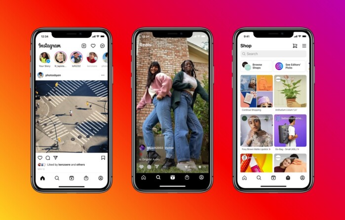

Что такое Instagram
Разработка приложения Instagram началась в Сан-Франциско, когда Кевин Систром и Майк Кригер решили переориентировать свой проект Burbn на мобильные фотографии. Приложение появилось в магазине приложений App Store компании Apple 6 октября 2010 года. Вскоре после выпуска приложения к команде присоединился Джош Ридель в качестве менеджера сообщества. В ноябре 2010 года к команде присоединился Шейн Суини в качестве инженера, а в августе 2011 года — Джессика Золлман как IT-евангелист сообщества. В январе 2011 года в приложение были добавлены хештеги для того, чтобы было легче находить пользователей и фотографии. В сентябре 2011 года была выпущена версия приложения 2.0, в которой появились живые фильтры, мгновенное изменение наклона, четыре новых фильтра, фотографии высокого разрешения, опциональные границы, поворот одним кликом и обновлённая иконка.
История создания и успеха İnstagram
Награды Instagram
Награды - В январе 2011 года Instagram занял второе место в номинации «Лучшее мобильное приложение» в конкурсе 2010 TechCrunch Crunchies.
В мае 2011 года журнал Fast Company поставил CEO Кевина Систрома на 66-е место в списке «100 самых креативных людей в бизнесе в 2011 году».
В июне 2011 года журнал Inc. включил основателей Систрома и Кригера в список «30 тех, кому нет 30».
В сентябре 2011 года Instagram выиграл в номинации «Лучшее местное приложение» в конкурсе SF Weekly Web Awards.
В 2011 году Систром и Кригер появились на обложке сентябрьского выпуска журнала 7x7.
В декабре 2011 года Apple выбрала Instagram «приложением года для iPhone».
ТОП-5 Instagram страниц
| Криштиану Роналду |
|---|
| Ариана Гранде |
| Дуэйн «Скала» Джонсон |
| Кайли Дженнер |
| Селена Гомес |